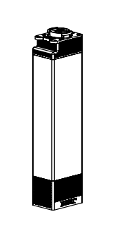
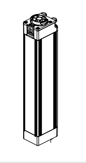
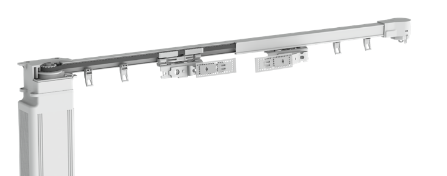
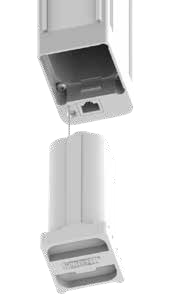

A gentle pull.
Touch Control lets a short pull start the motor in that direction. Both Go and iOn support it when enabled.
CURTAINSUK / BEHIND THE CURTAIN
Meet the Forest Shuttle motors that move your curtains.
Beautifully simple, quietly out of sight.
01 / CHOOSE YOUR POWER
Same track price. Your choice of power.

29 cm motor heightPLUG IN. SETTLE IN.
Choose Go for everyday mains power and control from the Forest Connect app. Its Wi-Fi is built in, so there is no extra Wi-Fi dongle to add.
Plan a suitable socket beside your chosen motor side. The motor is concealed behind the curtains.

32.5 cm motor heightFREEDOM FROM A NEARBY SOCKET
A rechargeable, removable battery powers iOn. Use the included EasyTouch remote, then remove the battery for charging when needed.
The motor is concealed behind the curtains. This iOn package has no built-in Wi-Fi or app control.
*Manufacturer straight-track limits. The complete track, carriers and mounting must support the curtain load. CurtainsUK offers straight tracks from 100 to 500 cm in whole centimetres.
02 / LOOK A LITTLE CLOSER
Select a number to explore.

The motor drives the curtain movement from one end of the track. It is concealed behind the curtains in the finished room.
03 / MADE FOR EVERYDAY LIVING
Touch Control lets a short pull start the motor in that direction. Both Go and iOn support it when enabled.
Open, stop and close with EasyTouch. Choose an individual channel or operate all active channels together.
Try the controls ↗Both motors include emergency manual control for moving curtains when power is unavailable. Follow the model's instructions and never force a jam.

Forest Shuttle iOn battery illustration · brochure page 4
A CLOSER LOOK / SHUTTLE ION
The battery detaches from the motor for charging. How often it needs charging depends on your curtain weight, track length and daily use.
Remove the battery and use the correct Forest charger. The indicator is orange while charging and green when charged. Follow the iOn manual for safe charging and refitting.
Open the visual fitting guide ↗04 / THE DETAILS, SIMPLIFIED
| At a glance | Shuttle Go | Shuttle iOn |
|---|---|---|
| Power | UK three-pin plug | Rechargeable battery |
| Straight-track curtain load* | Up to 35 kg | Up to 25 kg |
| Included remote | EasyTouch, 6 channels | EasyTouch, 6 channels |
| Built-in Wi-Fi / Forest Connect | Yes | No |
| CurtainsUK track length | 100 to 500 cm | 100 to 500 cm |
| Product price | The same for matching length and heading | |
| Motor dimensions | 7 × 5 × 29 cm | 7 × 5 × 32.5 cm |
| Motor net weight | 1,000 g | 1,160 g |
| Published travel speed | 12 to 16 cm/s | 14 to 17 cm/s |
| Maximum motor power | 24 W | 30 W |
| Protection rating | IP20 · dry indoors | IP20 · dry indoors |
Motor figures: Forest Shuttle Series brochure, pages 6–7. Dimensions describe the motor, not fitting clearances. *Always check the limit for the complete supplied configuration.
YOUR CURTAINSUK PACKAGE
Cut to your ordered length, with carriers, brackets, motor, control and all fixtures and fittings included.
Estimated dispatch: 4-5 weeks after order confirmation. All ordered products dispatch together. Supply only. CurtainsUK does not provide fitting or electrical installation. Confirm suitable fixing surfaces and the required motor clearance before ordering.